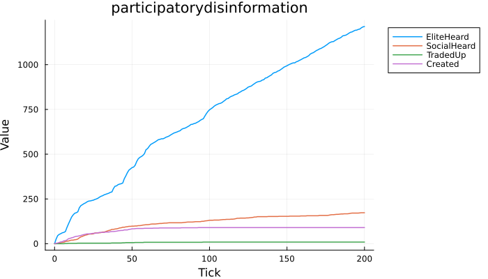
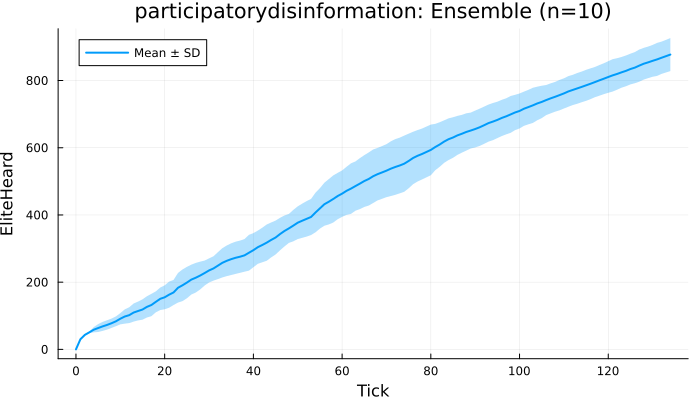
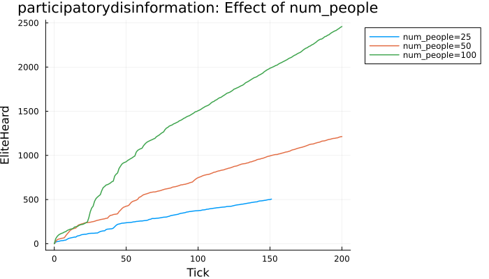

Participatory Disinformation
Overview
WHAT IS IT?
The purpose of this model is to simulate the top-down/bottom-up dynamics of what has come to be known as “participatory disinformation.”
See the article “What is participatory disinformation?” for a description of the real-world phenomenon. This is based on the work of researchers at the University of Washington Center for an Informed Public, et al, in the context of disinformation about the 2020 United States presidential election.
In short, participatory disinformation describes the feedback loop by which disinformation about a particular topic or “frame” is dissimenated in a top-down fashion by political elites to their audiences, who then produce their own false/misleading rumors about the topic in a bottom-up participatory manner. These new rumors are then “traded-up” the media chain by connected social media influencers in an attempt to reach the ear of the political elites. Finally the political elites echo these new rumors back to the audiences who originally created them, reinforcing the frame of the disinformation story.
THINGS TO NOTICE
It is easier to see some of the interesting behavior when you slow the model down.
As elites adopt traded-up rumors and echo them back to the audiences, you can see staggered “regimes” of mass rumor adoption that quickly spread across the entire network. A newly generated rumor might be slowly passed around the social network, but as soon as it is picked up and echoed back by the elites it gets disperesed quickly and totally to all of the elite-exposed agents. You can visually see this occur in the world, and by looking at the “Rumors heard” line chart.
When rumor dissipation is turned on, rumors in the social network fluctuate without settling into a pattern of total rumor adoption. However for audience agents who have exposure to elite influence, the repeated broadcasting of new and old rumors constantly reinforces the “frame” of rumors and counteracts the ongoing dissipation of rumors. You can visually see this in the world by comparing the color of agents with and without elite exposure.
Sometimes specific rumors don’t catch on. Either they fail to get randomly generated, or they aren’t traded up, or they are forgotten. It is possible that in a given execution, only a handful of the total rumors catch on and reach full information disperal, while other times all of the rumors will eventually get fully adopted. Note: It is not yet clear why this happens. It is possible that this is an artifact of the rumor creation procedure instead of being a meaningful model dyname. More testing and instrumentation is needed to better understand the behavior.
Without rumor dissipation, the model is essentially a runaway reinforcing feedback loop. It still demonstrates interesting patterns like staggered regimes, but having a countervailing stabilizing feedback loops makes the overall system dynamics more interesting.
THINGS TO TRY
Try setting up the model with different variants of elite exposure distribution and noting the effect this has on rumor adoption.
Try changing the relative balances of elite-influence, social-influence, trade-up-influence, and rumor-generation and seeing what effect this has on adoption and dispersal through the whole network.
Try turning rumor dissipation-rate down to zero or up really high. How much adoption influence is necessary for the amplifying feedback loop of accumulating influence to continue dominating the stabilizing loop of rumor dissipation?
EXTENDING THE MODEL
This model could be extended in a number of ways:
We could expliclitly model the process by which newly generated rumors are “traded up” to elite agents instead of this occurring automatically outside of the social network. We could also include the elies as part of the network itself instead of leaving them solely as a disconnected media influence.
Influencers themselves could be modeled in a manner that more closely resembles real-world patterns of social network influence. For example the set of agents that are selected to be influencers could be weighted to be drawn from the top end of the set of agents with a higher degree of connectivity within the network. Additionally we don’t model influencers as having any particular influence within the context of social network adoption, but real-world influencers would certainly have more peer-to-peer influence.
The rumor generation process itself is pretty naive and not informed by any real world understanding of participatory rumors and conspiracy theories (e.g. Mike Caulfield’s concept of “trope-field fit”). We could more explicitly model how rumors are created relative to events and ongoing narratives.
NETLOGO FEATURES
This model makes use of the NetLogo network extension to simulate the social network connection between audience agents.
The model also makes significant use of the third-party NetLogo bitstring extension in order to model rumor adoption. See the netlogo-bitstring documentation for more details on how this extension works.
RELATED MODELS
This model draws from and builds on foundational mechanics for simulating information dispersal in a network from two other models from the Modeling Commons:
The Spread of a Meme Across a Social Network by Kristen Amaddio
Correcting Information - delay and media effects by Kjirste Morrell
CREDITS AND REFERENCES
Rand, W. Introduction to Agent-Based Modeling (Summer 2017) Unit 4, Model. https://s3.amazonaws.com/complexityexplorer/ABMwithNetLogo/model-7.nlogo 7:Influentials.
Starbird, K., et al. (2021) “What is participatory disinformation?”. Center for an Informed Public, University of Washington, Seattle, WA.
Wilensky, U. (2005). NetLogo Preferential Attachment model. http://ccl.northwestern.edu/netlogo/models/PreferentialAttachment. Center for Connected Learning and Computer-Based Modeling, Northwestern University, Evanston, IL.
Wilensky, U. (1999). NetLogo. http://ccl.northwestern.edu/netlogo/. Center for Connected Learning and Computer-Based Modeling, Northwestern Institute on Complex Systems, Northwestern University, Evanston, IL.
COPYRIGHT AND LICENSE
Copyright 2021 Scott Johnson.
This work is licensed under the Creative Commons Attribution-NonCommercial-ShareAlike 3.0 License. To view a copy of this license, visit http://creativecommons.org/licenses/by-nc-sa/3.0/ or send a letter to Creative Commons, 559 Nathan Abbott Way, Stanford, California 94305, USA.
This model was submitted as a student project for the Intro to Agent-Based Modeling class, summer 2021, offered by Santa Fe Institute and taught by William Rand.
Parameters
| Parameter | Type | Default | Description |
|---|---|---|---|
num_people | Int | 50 | num people |
frac_influencers | Float64 | 0.1 | frac influencers |
max_rumors | Int | 10 | max rumors |
elite_influence | Float64 | 0.6 | elite influence |
social_influence | Float64 | 0.1 | social influence |
trade_up_influence | Float64 | 0.25 | trade up influence |
rumor_generation | Float64 | 0.05 | rumor generation |
dissipation_rate | Float64 | 0.1 | dissipation rate |
max_ticks | Int | 200 | max ticks |
Source Code
The Julia code to run this model:
using ArkModelZoo
_, trajectory = run_participatorydisinformation()Time Series

Ensemble Runs
Ten replicates with different random seeds, showing mean ± standard deviation.

Parameter Sensitivity
Varying num_people.

Appendix: Source Code
This model is implemented in the Ark.jl Entity-Component-System (ECS) framework. The code is split into five files, each with a distinct role:
- Parameters: a mutable struct holding all configurable values.
- Components: lightweight data types attached to individual entities (agents).
- Resources: world-level shared state accessible to all systems.
- Systems: functions that operate on entities each tick, defining model behavior.
- Model: wiring that assembles the world, registers resources and systems, and provides the run entry point.
Parameters (parameters.jl)
The parameter struct uses @kwdef so that every field has a default value and can be overridden by keyword. These defaults match the original NetLogo model’s slider settings.
Base.@kwdef mutable struct PDisinfoParams
num_people::Int = 50
frac_influencers::Float64 = 0.1
max_rumors::Int = 10
elite_influence::Float64 = 0.6
social_influence::Float64 = 0.1
trade_up_influence::Float64 = 0.25
rumor_generation::Float64 = 0.05
dissipation_rate::Float64 = 0.1
max_ticks::Int = 200
seed::Int = 42
endComponents (components.jl)
Components are lightweight data types attached to individual entities (agents). Mutable structs hold per-entity state, while empty tag structs act as markers for the ECS query system to efficiently filter entities.
struct PDisinfoDummy endResources (resources.jl)
Resources are world-level singletons shared across all systems, used for global state and aggregate statistics.
mutable struct PDisinfoNetwork
n_total::Int # num_people + 1 (elite)
adj::Vector{Set{Int}}
degree::Vector{Int}
agent_type::Vector{Int} # 0=regular, 1=influencer, 2=elite
rumors::Vector{BitVector} # BitVector of length max_rumors per agent
end
function PDisinfoNetwork()
PDisinfoNetwork(0, Set{Int}[], Int[], Int[], BitVector[])
end
function _pdisinfo_add_agent!(net::PDisinfoNetwork, max_rumors::Int)
push!(net.adj, Set{Int}())
push!(net.degree, 0)
push!(net.agent_type, 0)
push!(net.rumors, falses(max_rumors))
net.n_total += 1
return net.n_total
end
function _pdisinfo_add_edge!(net::PDisinfoNetwork, i::Int, j::Int)
if j ∉ net.adj[i]
push!(net.adj[i], j)
push!(net.adj[j], i)
net.degree[i] += 1
net.degree[j] += 1
end
end
mutable struct PDisinfoStats
times_heard_from_elites::Int
times_heard_from_social::Int
times_traded_up::Int
times_created_rumor::Int
end
PDisinfoStats() = PDisinfoStats(0, 0, 0, 0)Systems (systems.jl)
Systems contain the model logic and execute in a defined order each tick. Each system struct implements either initialize! (run once at setup) or update! (run every tick).
# Participatory Disinformation – ECS systems
# Rumor spreading on network with elite exposure and bitstring-based rumor tracking
struct InitPDisinfoSystem <: System end
function _pdisinfo_build_ba!(net::PDisinfoNetwork, rng, n::Int, max_rumors::Int)
# Start with 2 connected nodes
_pdisinfo_add_agent!(net, max_rumors)
_pdisinfo_add_agent!(net, max_rumors)
_pdisinfo_add_edge!(net, 1, 2)
# Each new node connects to 1 existing (preferential attachment)
for _ in 3:n
new_id = _pdisinfo_add_agent!(net, max_rumors)
total_degree = sum(net.degree[k] for k in 1:(new_id - 1))
if total_degree == 0
target = rand(rng, 1:(new_id - 1))
else
r = rand(rng) * total_degree
cumulative = 0.0
target = 1
for j in 1:(new_id - 1)
cumulative += net.degree[j]
if cumulative >= r
target = j
break
end
end
end
_pdisinfo_add_edge!(net, new_id, target)
end
end
function initialize!(::InitPDisinfoSystem, world::World)
params = get_resource(world, PDisinfoParams)
rng = get_resource(world, RNGResource).rng
net = get_resource(world, PDisinfoNetwork)
n_total = params.num_people + 1 # last agent is the elite
_pdisinfo_build_ba!(net, rng, n_total, params.max_rumors)
elite_id = n_total
net.agent_type[elite_id] = 2
# Assign influencers among non-elite agents
n_influencers = max(1, round(Int, params.num_people * params.frac_influencers))
indices = Random.shuffle(rng, collect(1:params.num_people))
for k in 1:n_influencers
net.agent_type[indices[k]] = 1
end
# Elite starts with 1 random rumor
rumor_idx = rand(rng, 1:params.max_rumors)
net.rumors[elite_id][rumor_idx] = true
return nothing
end
# --- Main go procedure ---
struct PDisinfoGoSystem <: System end
function update!(::PDisinfoGoSystem, world::World)
params = get_resource(world, PDisinfoParams)
rng = get_resource(world, RNGResource).rng
net = get_resource(world, PDisinfoNetwork)
stats = get_resource(world, PDisinfoStats)
elite_id = params.num_people + 1
# Process each non-elite agent in random order
order = Random.shuffle(rng, collect(1:params.num_people))
for i in order
# 1. Adopt from elite
if rand(rng) < params.elite_influence
novel = net.rumors[elite_id] .& .!net.rumors[i]
if any(novel)
novel_idx = findall(novel)
chosen = novel_idx[rand(rng, 1:length(novel_idx))]
net.rumors[i][chosen] = true
stats.times_heard_from_elites += 1
end
end
# 2. Adopt from network neighbours
neighbors = net.adj[i]
total_neighbors = length(neighbors)
if total_neighbors > 0
adopted_nbrs = Int[]
for j in neighbors
if any(net.rumors[j])
push!(adopted_nbrs, j)
end
end
frac = length(adopted_nbrs) / total_neighbors
if frac > 0.0 && rand(rng) < params.social_influence * frac
source = adopted_nbrs[rand(rng, 1:length(adopted_nbrs))]
novel = net.rumors[source] .& .!net.rumors[i]
if any(novel)
novel_idx = findall(novel)
chosen = novel_idx[rand(rng, 1:length(novel_idx))]
net.rumors[i][chosen] = true
stats.times_heard_from_social += 1
end
end
end
# 3. Generate rumor
if rand(rng) < params.rumor_generation
idx = rand(rng, 1:params.max_rumors)
if !net.rumors[i][idx]
net.rumors[i][idx] = true
stats.times_created_rumor += 1
end
end
# 4. Forget rumor
if rand(rng) < params.dissipation_rate
my_true = findall(net.rumors[i])
if !isempty(my_true)
idx = my_true[rand(rng, 1:length(my_true))]
net.rumors[i][idx] = false
end
end
end
# 5. Trade-up: influencer → elite
if rand(rng) < params.trade_up_influence
influencer_ids = findall(==(1), net.agent_type)
if !isempty(influencer_ids)
source = influencer_ids[rand(rng, 1:length(influencer_ids))]
novel = net.rumors[source] .& .!net.rumors[elite_id]
if any(novel)
novel_idx = findall(novel)
chosen = novel_idx[rand(rng, 1:length(novel_idx))]
net.rumors[elite_id][chosen] = true
stats.times_traded_up += 1
end
end
end
return nothing
end
# --- Termination ---
struct PDisinfoTerminationSystem <: System end
function update!(::PDisinfoTerminationSystem, world::World)
params = get_resource(world, PDisinfoParams)
tick = get_resource(world, Tick)
net = get_resource(world, PDisinfoNetwork)
# All non-elite agents heard all rumors?
all_heard = true
for i in 1:params.num_people
if !all(net.rumors[i])
all_heard = false
break
end
end
if all_heard || tick.tick + 1 >= params.max_ticks
get_resource(world, Terminate).stop = true
end
return nothing
endModel (model.jl)
The model file assembles all pieces: it creates the ECS World with the required component types, registers resources, builds the Scheduler with systems in execution order, and exposes the public run entry point. The observer pattern records the trajectory each tick.
function participatorydisinformation_world(; initial_capacity::Int = 128)
return World(PDisinfoDummy; initial_capacity = initial_capacity, allow_mutable = true)
end
function participatorydisinformation_systems()
return (InitPDisinfoSystem(), PDisinfoGoSystem(), PDisinfoTerminationSystem())
end
function participatorydisinformation_model(params::PDisinfoParams = PDisinfoParams())
world = participatorydisinformation_world()
_add_standard_resources!(world, params)
add_resource!(world, PDisinfoNetwork())
add_resource!(world, PDisinfoStats())
scheduler = Scheduler(world, participatorydisinformation_systems())
initialize!(scheduler)
return scheduler
end
struct PDisinfoObserver end
function participatorydisinformation_headers(::PDisinfoObserver)
return ["EliteHeard", "SocialHeard", "TradedUp", "Created"]
end
function participatorydisinformation_values(::PDisinfoObserver, world::World)
stats = get_resource(world, PDisinfoStats)
return Float64[stats.times_heard_from_elites, stats.times_heard_from_social,
stats.times_traded_up, stats.times_created_rumor]
end
function run_participatorydisinformation(; params::PDisinfoParams = PDisinfoParams(), observe::Bool = true)
return _run_model(participatorydisinformation_model, PDisinfoObserver(), participatorydisinformation_values; params, observe)
end